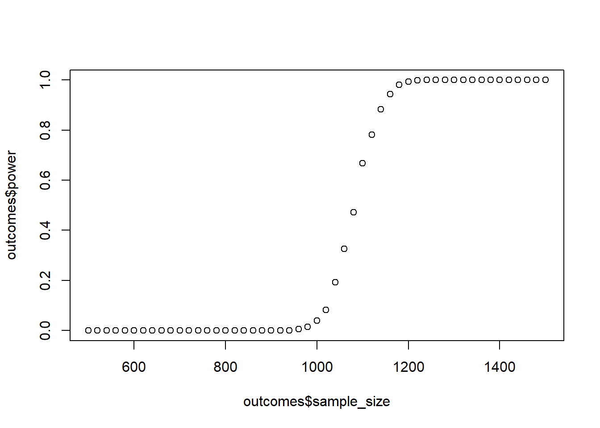
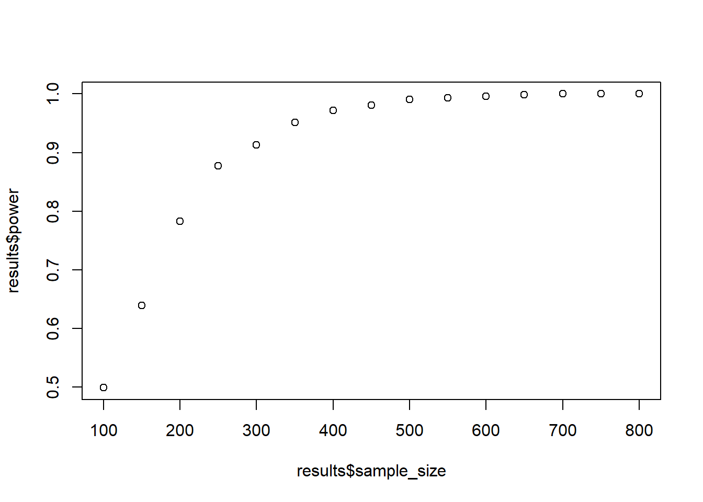

library(tidyverse)
twobytwo <-
function(
means = c(0, 0, 0, 0),
factors = c("Factor 1", "Factor 2"),
levels1 = c("Level 1", "Level 2"),
levels2 = c("Level 1", "Level 2"),
outcome = "Outcome"
){
d <-
data.frame(
f1 = rep(levels1, times = 2),
f2 = rep(levels2, each = 2),
outcome = means
)
names(d) <- c(factors, outcome)
p <-
ggplot(d, aes(x = .data[[factors[1]]], y = .data[[outcome]], shape = .data[[factors[2]]], group = .data[[factors[2]]])) +
geom_point(size = 3) +
geom_line(aes(linetype = .data[[factors[2]]]), size = 1) +
theme_bw() +
theme(
axis.ticks.y = element_blank(),
axis.text.y = element_blank()
)
return(p)
}Exercise V
Overview
In this set of exercises, you’ll test your understanding of interactions. You’ll start with simulating power for an interaction, before going into more detail of what that actually means. You play around with different effect sizes (and ways to approach interactions) to find out how that affects power. Please note: All experiments and previous research below are completely fictional–not like I have any idea what I’m talking about.
0.1 Exercise
You plan to analyze data from a content analysis. You’re interested in what predicts the number of Twitter followers for celebrities (including C-list celebrities, whatever that means). You believe that blue check mark definitely means having more followers compared to not having a check mark. Your dependent measure is, well, just the number of followers. You also expect that this difference will be stronger if a celebrity is more active, say tweets at least once a week.
Now you want to run a power analysis to test that idea. First draw (on a piece of paper or digitally) your interaction. You can use the function below to try out some “drawings”. Start with putting in some of the means to roughly get the pattern described above.
For example, the below would be a complete reversal:
twobytwo(
means = c(0, 2, 2, 0),
factors = c("Verified", "Activity"),
levels1 = c("No", "Yes"),
levels2 = c("Lurker", "Active"),
outcome = "Followers"
)
twobytwo(
means = c(2, 5, 2.5, 5.6),
factors = c("Verified", "Activity"),
levels1 = c("No", "Yes"),
levels2 = c("Lurker", "Active"),
outcome = "Followers"
)
For our case, we’re interested in an attenuation effect: There’s an effect of verification (well, it’s not a causal effect in that sense, but let’s not get into that for now) regardless of the activity type, but it’ll be stronger with higher activity. How much stronger? And what follower counts should you expect for the different groups? This is where common sense and thinking about effect sizes on the raw scale comes in. Let’s go back to the linear model:
\(Characters = \beta_0 + \beta_1Verification + \beta_2Activity + \beta_3Verification \times Activity + \epsilon\)
Go back to the slides if you need a refresher what each beta represents. Let’s talk about our expectations. Let’s say we expect those without verification and low activity to have something like 20,000 followers. We expect that verification makes a big difference, such that verified celebrities, even when they’re not active, have, on average, 50,000 followers. Now comes the tricky bit: How many more followers will an unverified, but active person have? Let’s say it’s 25,000. As for the interaction: How much does activity add to the already massive difference between unverified and verified lurkers? Let’s say it adds 1,000 followers.
Run a power analysis with these values where you figure out how many participants you need per group. “Recruiting” people won’t be difficult, so all you need is a rough estimate. Start at 500 celebrities and then go up in steps of 20 until 1,500. Use the linear model from above to create the scores. As for error: You’re really not sure about your estimates, so you add a lot of erro. Use a normally distributed error term of 5,000 with a standard deviation of 5,000. For now, you’re not interested in the actual contrasts, only in whether an interaction is present. So run an lm model with and one without the interaction term and compare them with anova. Do 1,000 runs per combo. Also, you really don’t want to commit a Type I error, so you set your alpha to 0.001.
set.seed(42)
b0 <- 2e4
b1 <- 3e4
b2 <- 5e3
b3 <- 1e3
sizes <- seq(500, 1500, 20)
runs <- 1e3
outcomes <-
data.frame(
sample_size = NULL,
power = NULL
)
for (n in sizes) {
pvalues <- NULL
for (i in 1:runs) {
d <-
data.frame(
Verification = rep(0:1, times = n*2),
Activity = rep(0:1, each = n*2)
)
d$Followers <- b0 + b1*d$Verification + b2*d$Activity + b3*d$Verification*d$Activity + rnorm(n, 5e3, 5e3)
mains <- lm(Followers ~ Verification + Activity, d)
interactions <- lm(Followers ~ Verification*Activity, d)
pvalues[i] <- anova(mains, interactions)$`Pr(>F)`[2]
}
outcomes <-
rbind(
outcomes,
data.frame(
sample_size = n,
power = sum(pvalues < .001) / length(pvalues)
)
)
}
plot(outcomes$sample_size, outcomes$power)
0.2 Exercise
We conduct an experiment. Previous research has shown that reading a story in the first person leads to more enjoyment on a 7-point Likert-scale than in the third person. For your thesis, you want to understand that effect better. You believe that the effect will be stronger if there’s lots of action compared to a tame story. In fact, you think that story type can completely knock out the effect (see here).
The linear model for enjoyment, measured on a 7-point Likert-scale, is as follows:
\(Enjoyment = \beta_0 + \beta_1Perspective + \beta_2Type + \beta_3Perspective \times Type\)
You believe the \(\beta\) are as follows:
\[\begin{align} &\beta_0 = 4.3\\ &\beta_1 = 0.01\\ &\beta_2 = -0.03\\ &\beta_3 = 0.4 \end{align}\]First draw the interaction to make sure you understand what it’s supposed to look like (either on paper or digitally). This time, you’d like to decompose the error, meaning rather than adding overall variance, you want to add variance per group. Therefore, you simulate the data with four group means, not with the linear model. You set the SD to 0.6 for all groups, except for the first-person action condition where you expect opinions will be a bit more divided, setting the SD here to 0.9.
Even though you want to power for the interaction, you’re also interested in main effects you can interpret. Therefore, use type 3 sums of squares with contrast coding for the factors. Start at 30 participants per group and keep going in steps of 5 per group until you reach 95%. Because this is exploratory, and you really don’t want to miss an effect, you set your alpha to 0.15. Do 1,000 runs per combo.
set.seed(42)
means <- c(4.3, 4.31, 4.27, 4.7)
sds <- c(rep(0.6, 3), 0.9)
alpha <- 0.15
draws <- 1e3
n <- 30
outcomes <-
data.frame(
sample_size = NULL,
power = NULL
)
power <- 0
while (power < .95) {
power <- NULL
pvalues <- NULL
for (i in 1:draws) {
d <-
data.frame(
id = factor(1:c(4*n)),
Enjoyment = rnorm(n*4, means, sds),
Perspective = factor(rep(c("1st Person", "3rd Person"), times = n*2)),
Action = factor(rep(c("Lame", "Lots of action"), times = n, each = 2))
)
m <- suppressMessages(afex::aov_car(Enjoyment ~ Perspective*Action + Error(id), data = d))
pvalues[i] <- m$anova_table$`Pr(>F)`[3]
}
power <- sum(pvalues < alpha) / length(pvalues)
outcomes <-
rbind(
outcomes,
data.frame(
sample_size = n,
power = power
)
)
n <- n + 5
}
plot(outcomes$sample_size, outcomes$power)
0.3 Exercise
GPower will give you the same sample size for a power analysis for an interaction as for a t-test if the effect size of the interaction is the same as in the t-test. Let’s check that. The effect size is the same if the effect is completely reversed (see here once more). Let’s say our first experiment produced a difference between control and treatment of 15 points. The mean and SD of the control were 100 and 15. For treatment: 115 and 15. That’s a massive effect size of one standard deviation. Now would a complete reversal look like? As in: A second factor completely reverse the effect of the first factor. Like this, using the plotting function from above:
twobytwo(means = c(100, 115, 115, 100))
First, calculate power for the original effect (Circles above in the graph) in GPower (two-tailed). Alpha is 0.05 and power should be 95%. The groups should have the same size. Now simulate the above interaction and calculate power for the interaction effect. Compare your estimate to the GPower estimate you just got. Go about it as you think is best. (Tip: Turn the solution into a function; you’ll need it again for the next exercises.)
set.seed(42)
interaction_power <- function(
means = c(100, 115, 115, 100),
sd = 15,
sizes = 1:20,
draws = 1e3
) {
outcomes <-
data.frame(
sample_size = NULL,
power = NULL
)
for (n in sizes) {
pvalues <- NULL
for (i in 1:draws) {
d <-
data.frame(
id = factor(1:c(4*n)),
scores = rnorm(n*4, means, sd),
factor1 = factor(rep(c("level1", "level2"), times = n*2)),
factor2 = factor(rep(c("level1", "level2"), times = n, each = 2))
)
mains <- lm(scores ~ factor1 + factor2, d)
interactions <- lm(scores ~ factor1 + factor2 + factor1:factor2, d)
pvalues[i] <- anova(mains, interactions)$`Pr(>F)`[2]
}
outcomes <-
rbind(
outcomes,
data.frame(
sample_size = n,
power = sum(pvalues < 0.05) / length(pvalues)
)
)
}
return(outcomes)
}
results <- interaction_power(draws = 200)
plot(results$sample_size, results$power)
0.4 Exercise
What if an effect is attenuated? Say the original effect was between two groups with means of 4.4 and 4.9 and SDs of 0.6 and 0.7, respectively. Calculate Cohen’s d, then put that into GPower for an independent t-test (two-tailed) with an alpha of 0.05. Note down the sample size needed for 95% power. Next, we introduce a second factor that attenuates the original effect, such that the effect is half is large when we consider the second condition. The graph below (hopefully) shows what I mean:
twobytwo(
means = c(0, 1, 0, 0.5),
factors = c("Comparison", "Which condition?"),
levels1 = c("A", "B"),
levels2 = c("Old condition", "New condition")
)That means, for the two groups under the second condition, we need to half the effect size. First, half the effect size that you put into GPower and calculate the sample size again. Note down the number you get. Then get to simulation: For the new (half-sized) two groups, half the difference between them. The SDs can be the same as for the first two groups. Calculate power for the interaction effect and compare the sample size needed for 95% to the two estimates you got from GPower. To save yourself time, use the function you wrote for the previous exercise. Also, use the GPower estimates as a ballpark figure to set your sample sizes in the simulation. What does adding an interaction add to your sample size? Compare to the case here. Tip: You’ll need to calculate the standardized effect size first for GPower; then set the means for the new two groups in relation to that standardized effect size.
set.seed(42)
m1 <- 4.4
m2 <- 4.9
sd1 <- 0.6
sd2 <- 0.7
pooled_sd <- sqrt((sd1**2 + sd2**2)/2)
d <- (m2-m1)/pooled_sd
means <- c(m1, m2, m1, m1 + d/2*pooled_sd)
results <- interaction_power(
means = means,
sd = rep(c(sd1, sd2), 2),
sizes = seq(100, 800, 50),
draws = 1e3
)
plot(results$sample_size, results$power)
0.5 Exercise
So far, we’ve only considered the overall interaction effect. But a significant interaction can mean many different patterns, which is why we always follow up with simple effects. Take the attenuation from the previous exercise: There are 6 comparisons that could be of interest to us, one for each possible contrasts. Say for our hypothesis of attenuation to hold, we’re interested in two simple effects: The comparison of the two levels under the old condition and the comparison of the two levels under the new condition.
Therefore, repeat the above simulation, but this time also extract the p-values of these two posthoc simple effects. You can do that with pairs(emmeans::emmeans(interactions, "factor1", by = "factor2")). Save the power of the overall interaction term and the two simple effects and plot them. You can use the following code, assuming your data frame is called results, has a variable with the sample size sample_size, the type of power type, and power. You’ll need to adjust your function above or start from scratch. What’s the power of the simple effects compared to the overall interaction effect?
library(ggplot2)
ggplot(results, aes(x = sample_size, y = power, color = type, group = type)) + geom_point() + theme_bw()set.seed(42)
interaction_power <- function(
means = c(4.4, 4.9, 4.4, 4.65),
sd = rep(c(sd1, sd2), 2),
sizes = seq(50, 600, 50),
draws = 1e3
) {
outcomes <-
data.frame(
sample_size = NULL,
type = NULL,
power = NULL
)
for (n in sizes) {
pvalues <- NULL
pvalues_simple1 <- NULL
pvalues_simple2 <- NULL
for (i in 1:draws) {
d <-
data.frame(
id = factor(1:c(4*n)),
scores = rnorm(n*4, means, sd),
factor1 = factor(rep(c("level1", "level2"), times = n*2)),
factor2 = factor(rep(c("level1", "level2"), times = n, each = 2))
)
mains <- lm(scores ~ factor1 + factor2, d)
interactions <- lm(scores ~ factor1 + factor2 + factor1:factor2, d)
ps <- data.frame(pairs(emmeans::emmeans(interactions, "factor1", by = "factor2")))
pvalues[i] <- anova(mains, interactions)$`Pr(>F)`[2]
pvalues_simple1[i] <- ps$p.value[1]
pvalues_simple2[i] <- ps$p.value[2]
}
outcomes <-
rbind(
outcomes,
data.frame(
sample_size = rep(n, 3),
type = factor(c("interaction", "simple full", "simple half")),
power = c(
sum(pvalues < 0.05) / length(pvalues),
sum(pvalues_simple1 < 0.05) / length(pvalues_simple1),
sum(pvalues_simple2 < 0.05) / length(pvalues_simple2)
)
)
)
}
return(outcomes)
}
results <- interaction_power(draws = 500)
library(ggplot2)
ggplot(results, aes(x = sample_size, y = power, color = type, group = type)) + geom_point() + theme_bw()0.6 Exercise
You want to know what leads people to change their opinion about an issue. Previous research shows that the amount of arguments leads to stronger persuasiveness of a message. That effect will be knocked out, you believe, if the message comes from a source with low credibility. Therefore, you expect something like this:

You go for a repeated measures design, where people read four stories, one in each condition, and report how persuasive they find the story to be. (For the sake of argument, let’s ignore order or carry-over effects). You measure the outcome on a 100-point scale. Without knowing any better, you assume the no arguments, low credibility condition will fall on the middle of the scale. That makes it easy, because only the several arguments, high credibility condition will differ from the other three. You want to build in a reasonable amount of uncertainty, so you choose an SD of 20–this way, most of your values will be within 10 and 90 on the rating scale (50-+2*SD). As for the effect: Your SESOI is 10 points–anything below that is too small to care about in your opinion.
Run a simulation where you draw from a multivariate normal distribution. The correlation between measures should be fairly low, 0.3. Power for the interaction effect (remember sum-to-zero contrasts). Start at 40 people and go up in steps of 5 until you reach 150. You’ll need to do some data transformations to get the data in the right (= long) format.
library(MASS)
set.seed(42)
sesoi <- 10
means <- c(none_low = 50, several_low = 50, none_high = 50, several_high = 50 + sesoi)
sd <- 20
correlation <- 0.3
runs <- 500
sizes <- seq(20, 150, 10)
covariance <- correlation * sd * sd
sigma <- matrix(
c(
sd**2, covariance, covariance, covariance,
covariance, sd**2, covariance, covariance,
covariance, covariance, sd**2, covariance,
covariance, covariance, covariance, sd**2
),
ncol = 4
)
outcomes <-
data.frame(
sample_size = NULL,
power = NULL
)
for (n in sizes) {
pvalues <- NULL
for (i in 1:runs) {
d <- mvrnorm(
n,
means,
sigma
)
d <- as.data.frame(d)
d$id <- factor(1:n)
d <- pivot_longer(
d,
cols = -id,
values_to = "scores",
names_to = "condition"
) %>%
separate(condition, into = c("Arguments", "Credibility"), sep = "_") %>%
mutate(
across(c("Arguments", "Credibility"), as.factor),
)
m <- summary(afex::aov_car(scores ~ Arguments*Credibility + Error(id/Arguments*Credibility), d))
pvalues[i] <- as.numeric(unlist(m)[26])
}
outcomes <-
rbind(
outcomes,
data.frame(
sample_size = n,
power = sum(pvalues < 0.05) / length(pvalues)
)
)
}
plot(outcomes$sample_size, outcomes$power)
0.7 Exercise
You have a natural experiment coming up because you know that some users in the UK get a new streaming service before users in France. You want to know whether access to another streaming service increases satisfaction with people’s media diet. From the waiting list for that streaming service, you want to sample comparable users in the UK and France, ask them how satisfied they are with their media variety, wait for a month to give the UK users time to try out the new streaming service whereas the French users will be the control group. In other words, you have a mixed design with a pre-post measure within, but condition aka country (access to streaming) between.
You need to run a power analysis. For your measure of satisfaction, you use a 7-point Likert-scale. You assume that France at the pre-measure will score above the midpoint, given how many providers are already out there, say 3.9. You also expect no change, maybe even a slight decline seeing how the UK is getting access, so you set the post-measure to 3.8. For the UK, you expect a somewhat higher satisfaction already at pre-measure because they usually get stuff directly after the US, say 4.3. Importantly, you believe access to this new streaming service will increase satisfaction by 0.4 points–that’s the mimimum amount of change on that measure that predicts more users in the future. As for the SDs: You don’t see any reason why variation would increase from pre- to post-measure. However, you do believe there’s a bit more variation in France than in the UK based on previous research with large samples. You set the SD for France to 1.2, but for the UK to 0.9. As for correlations between pre- and post-measures: You expect France to be more consistent (0.6) than the UK (0.4).
Simulate power. You’ll need to do a variance-covariance matrix for correlated measures for each country. Base your power analysis on the interaction effect, not the simple effects. To run the ANOVA, you’ll need to properly nest the error, meaning Error(id/Time) in the aov_car command. You have money for a max of N total participants.You set your alpha to 0.01 and want to stop at 90% power. Start at 100 people per country and go up in steps of 20.
library(MASS)
set.seed(42)
means_france <- c(pre = 3.8, post = 3.9)
sd_france <- 1.2
cor_france <- 0.6
cov_france <- cor_france * sd_france * sd_france
means_uk <- c(pre = 4.3, post = 4.7)
sd_uk <- 0.9
cor_uk <- 0.4
cov_uk <- cor_uk * sd_uk * sd_uk
alpha <- 0.01
n <- 100
runs <- 500
sigma_france <-
matrix(
c(
sd_france**2, cov_france,
cov_france, sd_france**2
),
ncol = 2
)
sigma_uk <-
matrix(
c(
sd_uk**2, cov_uk,
cov_uk, sd_uk**2
),
ncol = 2
)
outcomes <-
data.frame(
sample_size = NULL,
power = NULL
)
power <- 0
while (power < 0.90) {
pvalues <- NULL
for (i in 1:runs) {
france <- mvrnorm(
n,
means_france,
sigma_france
)
france <- as.data.frame(france)
france$country <- factor("france")
france$id <- 1:n
uk <- mvrnorm(
n,
means_uk,
sigma_uk
)
uk <- as.data.frame(uk)
uk$country <- factor("uk")
uk$id <- (n+1):(2*n)
d <- rbind(france, uk)
d <- d %>%
pivot_longer(
cols = c(pre, post),
names_to = "time",
values_to = "satisfaction"
)
m <- suppressMessages(summary(afex::aov_car(satisfaction ~ country*time + Error(id/time), d), type = 3))
pvalues[i] <- as.numeric(unlist(m)[26])
}
power <- sum(pvalues < alpha) / length(pvalues)
outcomes <-
rbind(
outcomes,
data.frame(
sample_size = n,
power = power
)
)
n <- n + 20
}
plot(outcomes$sample_size, outcomes$power)